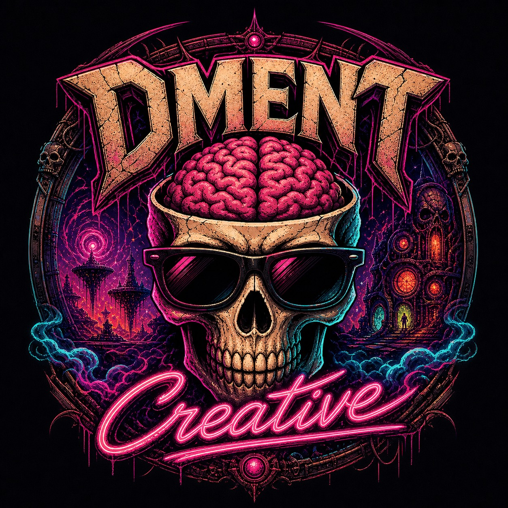

SIMON
PRESS START
Iniciando motor web...
Conectando
Iniciando
La primera carga descarga aproximadamente 73 MB. No cierres esta pestaña.
Downloading...
Preparando Simon Press Start...
Gira el celular
El juego utiliza la pantalla horizontal.
AIO ⏏︎
AIO ■
AIO ▶
Music ■
min
avg
max
RESET
(battery level unknown)
(charging state unknown)
Select files